Roadbook · 13 a 29 de dezembro de 2026 · ← dossier completo
Namíbia, dia a dia,
com os sítios à frente
Um loop anti-horário a partir de Windhoek: Kalahari, Fish River, Kolmanskop, a costa dos ventos, Sossusvlei, o granito do Spitzkoppe, a pré-história do Damaraland e duas noites em Etosha. Cada dia traz as horas, o que se vê e as fotografias dos locais — para reconhecer no terreno o que se planou em casa.
Porto → Frankfurt-Hahn → Frankfurt → a bordo para Windhoek
13 dez · A caminhoNão é um dia de deserto, é um dia de logística — e o único em que um erro custa a viagem toda, porque são três bilhetes separados . A linha do dia: 07:20 Porto → 10:55 Frankfurt-Hahn; 12:15 de autocarro para o aeroporto de Frankfurt, no P36 às 14:05 ; tarde na cidade; check-in às 18:00 ; 22:00 para Windhoek.


| Hora | O quê | Notas |
|---|---|---|
| 07:20 | Voo OPO → HHN FR4393 | Aterragem 10:55. Só o Henrique tem mala de porão na Ryanair (20 kg) — é ele que a levanta |
| 11:15 | Paragem 14, em frente ao Terminal B do Hahn | O autocarro sai às 12:15 em ponto; estar lá 10 minutos antes |
| 12:15 | Autocarro HHN → FRA | Bilhete 37694876 · chega ao P36, junto ao Terminal 1, às 14:05 |
| 14:05 | Consignação de bagagem, T1 Área B Nível 1 | Aberta 24h, sem reserva, paga por peça. Ficam com passaportes e material de valor |
| 14:30 | S-Bahn S8/S9 → Hauptwache | ~15 min. Bilhete próprio: o aeroporto tem zona tarifária separada |
| 15:00 | Mercado de Natal: Römerberg, Paulsplatz, Mainkai | Está a decorrer de 23/11 a 22/12. A melhor hora é a última — o sol põe-se às 16:25 |
| 17:15 | S-Bahn de volta ao FRA | Levantar as malas e seguir para o check-in |
| 18:00 | Check-in Lufthansa / Discover | Abre ~4h antes. Para um intercontinental, três horas de antecedência é o mínimo |
| 22:00 | Voo FRA → WDH 4Y132 | 10h25 a bordo; aterragem a 14 de dezembro às 09:25 |
Porquê: o voo nocturno é o que permite acordar em Windhoek às 09:25 e ainda fazer 320 km até ao Kalahari com luz — a primeira noite de tenda é a de 14, no Kalahari.
Hosea Kutako → Windhoek → Hardap (Mariental)
14 dez · Chegada & HardapO dia da papelada: imigração com o e-visa impresso, shuttle da Asco até à cidade, contrato, briefing e o primeiro supermercado a sério. É o dia mais apertado da viagem em tempo — não pelo volante, mas porque tudo depende de o voo aterrar à hora.
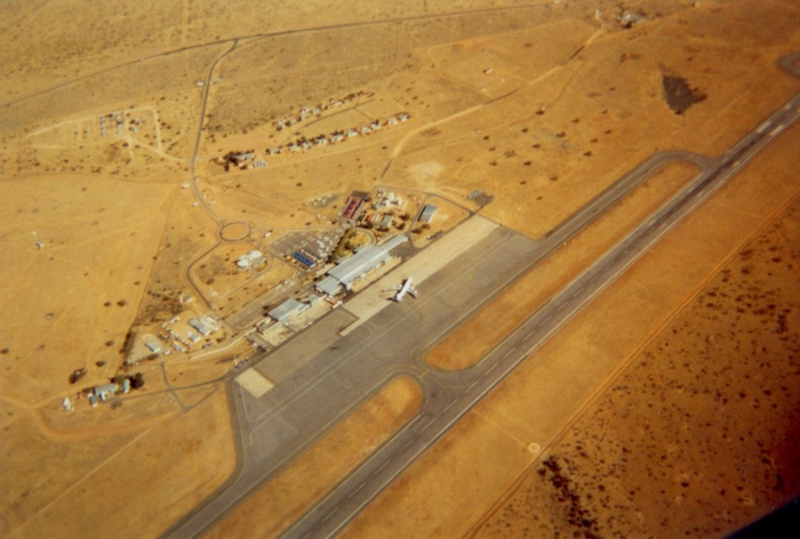
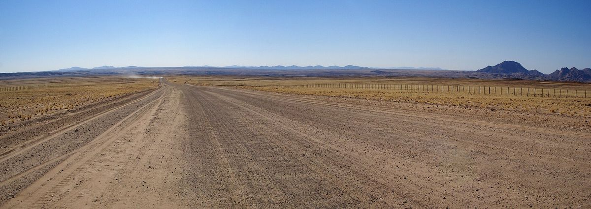
| Hora | O quê | Notas |
|---|---|---|
| 09:25 | Aterragem em Hosea Kutako | E-visas impressos à mão. Imigração + bagagem: contem 30–40 min |
| 10:15 | Shuttle da Asco (8h–15h) | O motorista sai no máximo 90 min após a aterragem; ~45 min até ao depot na Mandume Ndemufayo |
| 11:45 | Depot Asco: contrato e inspecção | Dois condutores: o Henrique e a Cláudia ficam nomeados no contrato (a franquia inclui dois sem custo). Os três assistem ao briefing. Fotografar todos os danos |
| 12:45 | Montar e desmontar as duas tendas | No parque da rental, com os três a aprender. Verificar: 2 suplentes, macaco, compressor, jerricã, roupa de cama para 3 |
| 13:30 | Supermercado em Windhoek | Comida para 4–5 dias, 40–50 L de capacidade de água, gelo, lenha. Depósito cheio antes de sair |
| 14:15 | Saída para sul pela B1 | ~260 km até ao Hardap; sai-se da B1 em Mariental. Combustível em Rehoboth se necessário |
| 16:45 | Trópico de Capricórnio | Marco na berma da B1, coordenadas -23.500 / 17.128, 40 km antes de Mariental. Cinco minutos e uma foto |
| 17:45 | Chegada ao Hardap | Campismo na albufeira: montar com luz, a última hora dourada é para isso |
| 19:30 | Pôr do sol, braai e céu | Lua a 22%, põe-se às ~22:30. Pelicanos e o espelho de água em vez de dunas |
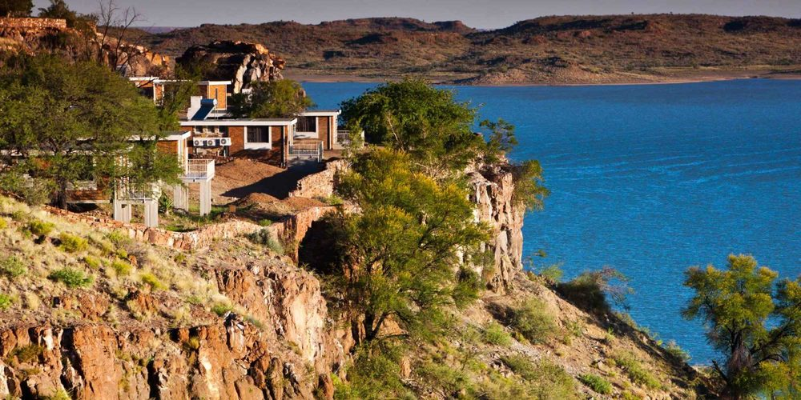
Fotografia: NWR · Hardap ResortN$220/pessoa, N$660 pelos três, reservado (786431 · CW-Rw_EOiaD8F). Porquê: 260 km de asfalto desde Windhoek, 28 parcelas à beira da albufeira e nada para montar além das tendas. Fica a 24 km de Mariental para reabastecer de manhã.
Hardap → Keetmanshoop → Quiver Tree Forest
15 dez · KokerboomsEtapa curta de propósito: o sul a 38 °C pede ritmo lento. Em vez de chegar e hibernar, a manhã ocupa-se com os fósseis de Mesosaurus, e o calor guarda-se para a sesta. O prémio continua a ser o fim do dia: os kokerbooms à luz dourada e a melhor noite de estrelas da viagem.
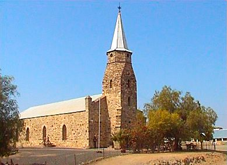
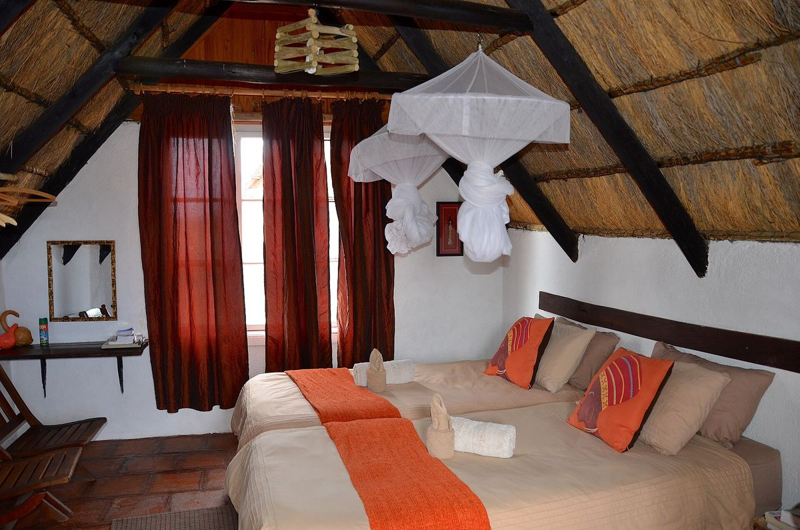
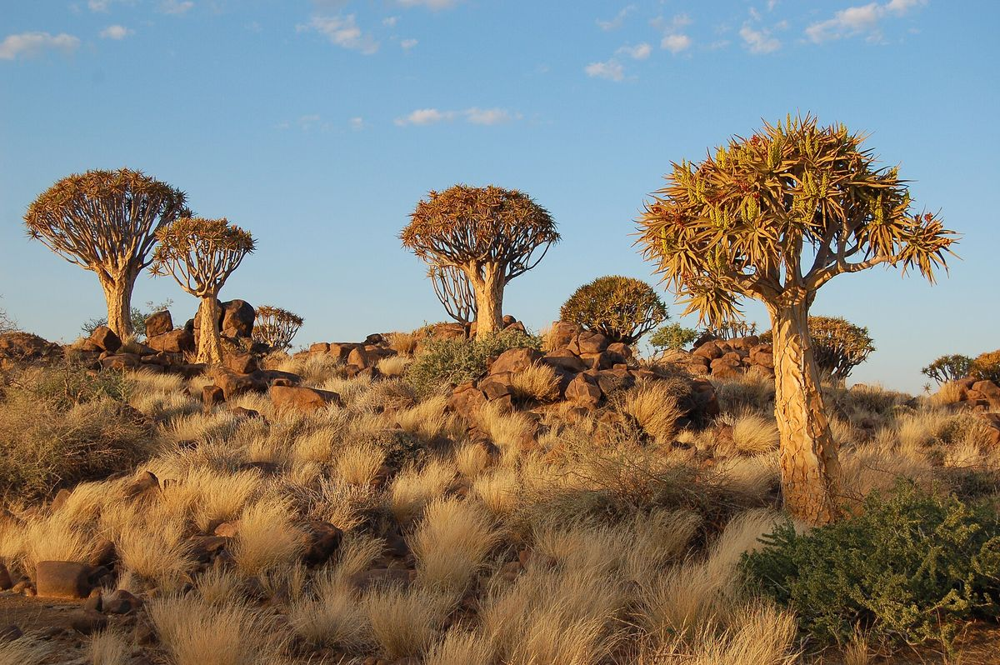
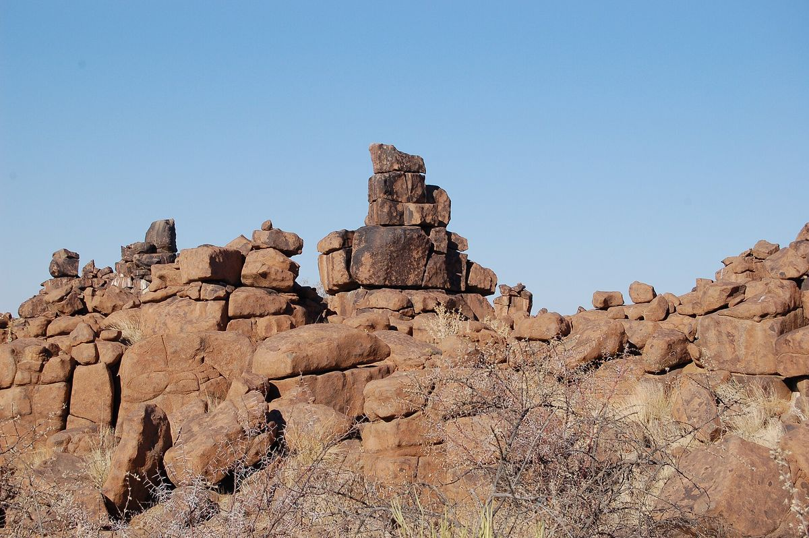
| Hora | O quê | Notas |
|---|---|---|
| 05:30 | Café e nascer do sol nas dunas | Oryx nas cristas, luz rasante sobre a albufeira |
| 06:00 | Volta pelo parque de caça do Hardap | Meia hora pelas pistas ao amanhecer: rinoceronte-branco , oryx, springbok. A melhor probabilidade de fauna do bloco sul |
| 07:00 | Saída pela B1 para sul | ~250 km, asfalto por Mariental |
| 10:15 | Keetmanshoop: combustível, água e gelo | Última vila decente antes do canyon. Igreja missionária de 1895 a duas ruas, 15 minutos |
| 10:45 | C17 para leste | Gravel bom, 40 km até à farm Spitzkoppe-Ost |
| 11:20 | Mesosaurus Fossil Camp | Visita guiada de 1h30 aos fósseis do réptil de 280 milhões de anos, com os Steenkamp. Paga-se no local |
| 13:15 | Quiver Tree Forest Rest Camp | Campo montado à sombra. Sem reserva; paga-se em dinheiro |
| 14:00 | Sesta até às 16h | 38 °C é para ficar quieto; é aqui que se paga a factura de não descansar |
| 16:30 | Giant's Playground | 10 min do camp: caos de dolerito empilhado, óptimo à luz baixa |
| 17:15 | Floresta de kokerbooms | Luz dourada nos aloés-árvore de 200–300 anos; pôr do sol às 19:30 |
| 23:15 | A lua põe-se | A partir daqui, céu escuro: Nuvens de Magalhães, Oríon ao zénite, 47 Tucanae. Ficar até à 01:00 |
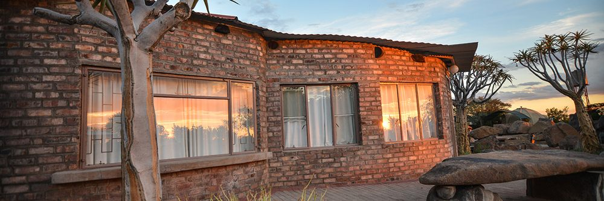
Fotografia: Quivertree Forest Rest Camp(~N$220–250/pessoa). Porquê: dorme-se literalmente dentro do cenário de astrofotografia; a 10 min de Keetmanshoop para reabastecer de manhã.
Keetmanshoop → Fish River Canyon (Hobas)
16 dez · O grande canyonManhã de estrada curta para chegar ao canyon antes do forno. O programa a sério é só ao fim da tarde: o trilho dentro do canyon está fechado (só abre mai–set), portanto o jogo é caminhar pela borda entre o Main Viewpoint e o Hell's Bend com o sol baixo.
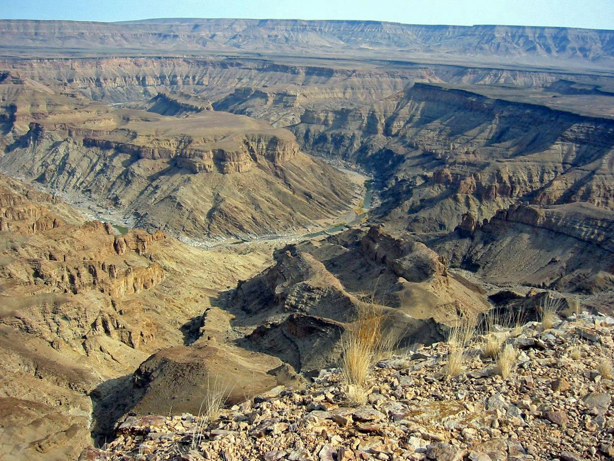


| Hora | O quê | Notas |
|---|---|---|
| 05:30 | Nascer do sol na floresta | Dormes dentro dela e a entrada já está paga até ao pôr do sol. Luz completamente diferente da das 17:15 — vale os cinquenta minutos a menos de sono |
| 06:30 | Café e desmontar o campo | Sair cedo: o gravel aquece e não há sombra |
| 07:15 | Saída B4 → C12 para Hobas | 160 km, ~2h |
| 09:30 | Portão de Hobas | Taxas em dinheiro : N$280 por adulto + N$60 pela viatura, por dia. Não aceitam cartão |
| 10:00 | Camp instalado, piscina | A NWR só garante o camp a partir das 14h, mas as parcelas ficam livres cedo |
| 11:00 | Sesta obrigatória | 35–42 °C. Nada de esforço entre as 11h e as 16h30, para nenhum dos três |
| 16:45 | Main Viewpoint | 10,5 km do camp, 20 min em gravel. 550 m de profundidade a mudar de cor |
| 18:00 | Hiker's Viewpoint e Sunset Viewpoint | A 1,5 km do Main: caminhar ao longo da borda, sem pressa |
| 19:30 | Pôr do sol no Main Viewpoint | O momento do dia. Ficar até o sol tocar a linha do horizonte |
| 19:40 | Regresso imediato ao camp | 10,5 km, 20 min, faróis ligados no crepúsculo. Não há alternativa: não se dorme na borda |
| 20:15 | Braai | Campo já montado: é só acender o fogo |
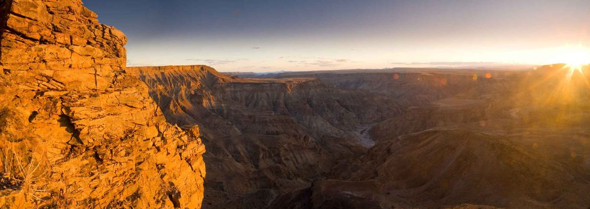
Fotografia: NWR · Fish River (a região do Hobas)(NWR, N$480/pessoa, piscina). Porquê: é o único alojamento à borda do canyon — nascer do sol no miradouro a 10 min, e a piscina às 14h não é luxo, é sobrevivência.
Fish River → Aus → Lüderitz (via Canyon Roadhouse)
17 dez · Do canyon ao AtlânticoRepetição deliberada do miradouro ao nascer do sol, porque a luz do dia anterior raramente é a melhor. Depois estrada para oeste, café num museu de ferrugem, os cavalos de Garub, e a descida até ao Atlântico. A base dos dois dias seguintes é Lüderitz, não Aus.
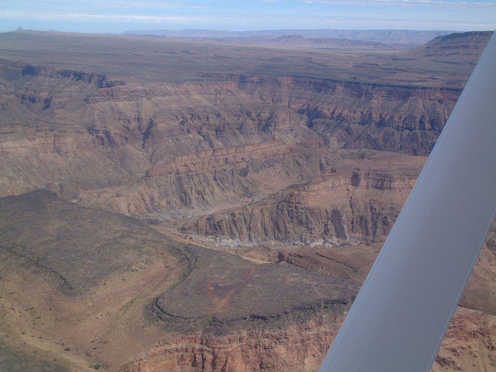
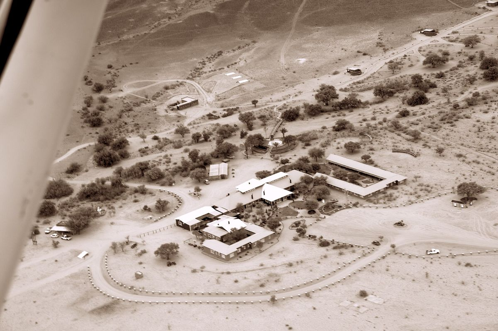
.jpg)
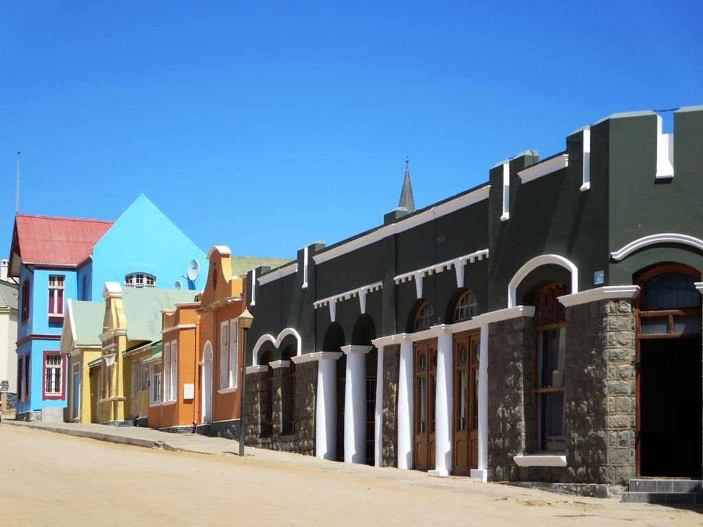
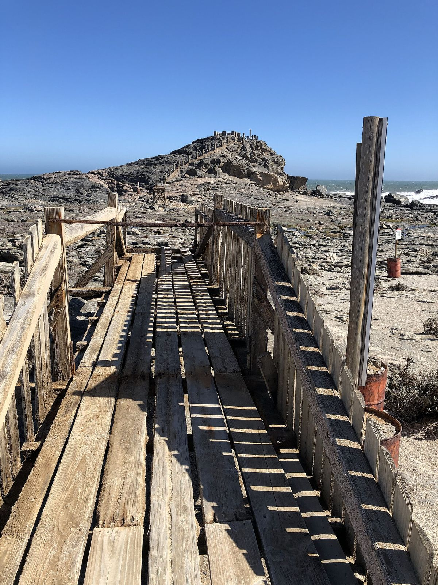
| Hora | O quê | Notas |
|---|---|---|
| 05:40 | Saída para o Hell's Bend | 11,6 km, 20 min. O sol nasce às 05:55, chegas com ele ainda baixo |
| 06:00 | Hell's Bend ao amanhecer | O meandro com 550 m de parede, sem uma alma. Uma hora de tripé |
| 07:20 | Regresso ao camp | Pequeno-almoço, duche rápido e desmontar |
| 08:30 | Saída C12/C13 | 345 km até Lüderitz, gravel e depois asfalto |
| 10:30 | Canyon Roadhouse | Café e o museu vivo de carros enferrujados; combustível caro mas é o único |
| 13:15 | Aus | Encher o depósito e comprar gelo. É a última vila antes da costa |
| 15:45 | Lüderitz: compras no Spar | 500 m do centro. Comprar antes de fechar: amanhã saem às 05:30 e só voltam ao fim da tarde |
| 16:45 | Check-in no Shalom | Apartamento com cozinha, a norte do centro. Deixar as malas e arejar |
| 17:30 | Diaz Point até ao pôr do sol | 10 km. A ponte de madeira, a cruz e o Atlântico — é o sítio certo para esta hora, e liberta o dia 5 |
| 19:40 | Jantar em casa | Primeira noite com cozinha desde Windhoek: jantar sem depender de restaurante |
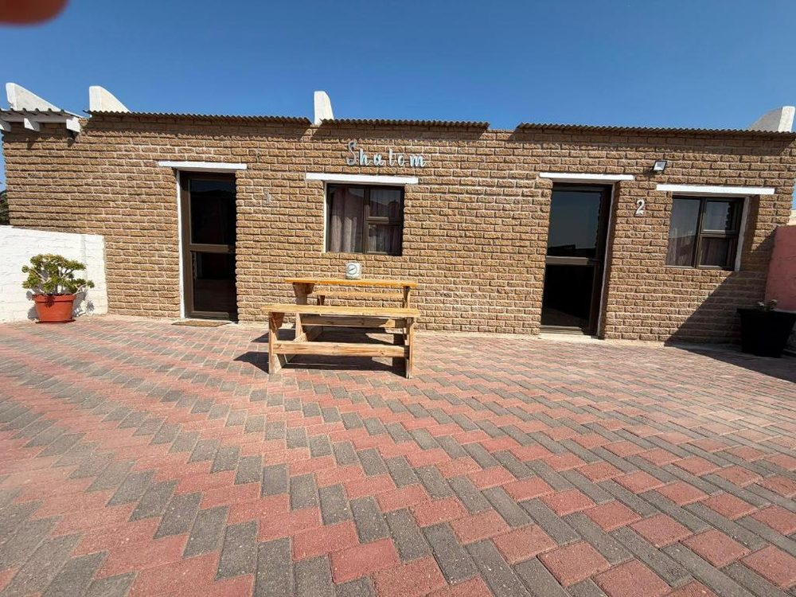
Fotografia: Shalom Self CateringApartamento familiar, €103 as duas noites , reserva 6378109969 (PIN 8463), cancelamento gratuito até 16 dez e pagamento à chegada. Porquê: cozinha própria, estacionamento ao ar livre (as tendas no tejadilho passam) e 15 minutos de Kolmanskop.
Kolmanskop · Lüderitz · Grosse Bucht
18 dez · ⭐ A cidade engolidaO dia urbex, e o único em que o despertador é a sério. Com o photo permit entra-se em Kolmanskop antes de o sol tocar as casas, sem ninguém. Ao meio-dia, Lüderitz: a cidade a pé, ostras, e à tarde a Grosse Bucht. O Diaz Point ficou no dia 4, ao pôr do sol, com a luz certa.
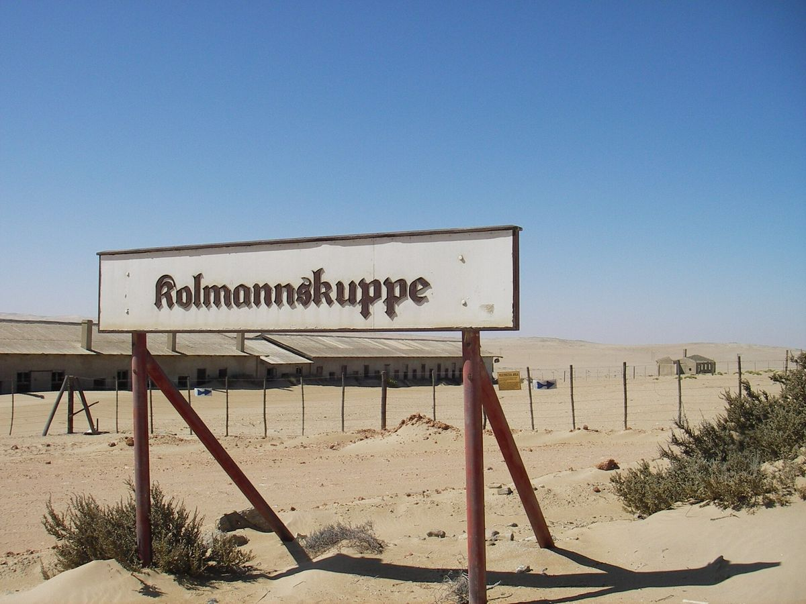
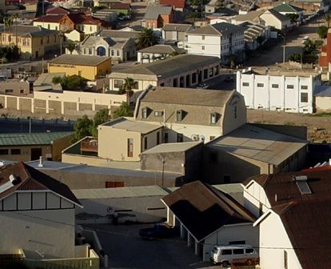
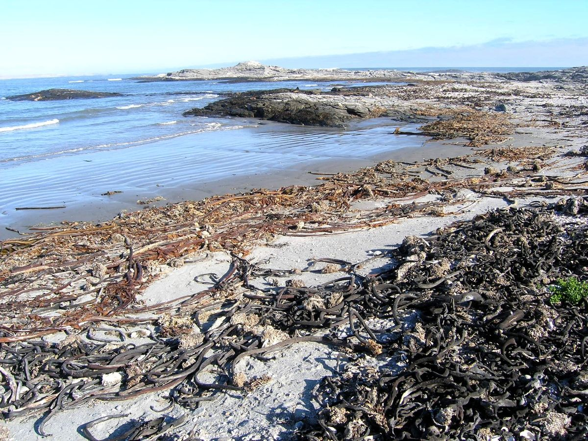
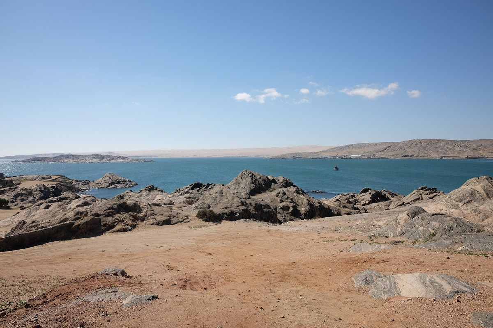
| Hora | O quê | Notas |
|---|---|---|
| 05:00 | Café rápido, sem barulho | Saída cedo mas sem montar cozinha a sério |
| 05:30 | Saída para Kolmanskop | 10 km, 15 min. Neblina possível ao amanhecer |
| 05:50 | Portão lateral de Kolmanskop | Day Pass já comprado (bilhetes 1503719053–55). Usar o código de acesso ao portão que vem no email de confirmação, não o QR: o portão só tem pessoal às 8h |
| 06:05 | Nascer do sol nas casas de areia | Grande-angular + tripé; HDR nos interiores contra as janelas |
| 09:30 | Tour guiada (incluída no permit) | Opcional: a esta hora já se fotografou o que interessava |
| 10:00 | Padaria alemã e centro a pé | Goerke Haus, Felsenkirche, Bismarckstrasse. Uma hora e meia chega |
| 12:30 | Ostras no Diaz Coffee Shop | ~N$15 a unidade, peixe do dia. A melhor refeição barata do país |
| 14:00 | Sesta em casa | O dia 4 já levou o Diaz Point ao pôr do sol. Aqui descansa-se: são 12 horas em pé desde as 05:00 |
| 16:00 | Grosse Bucht | Baía aberta a sul: flamingos, naufrágios e vento |
| 18:30 | Shark Island ao pôr do sol | Pôr do sol às 19:30, com a cidade às costas |
| 19:45 | Jantar no apartamento | Preparar a saída das 06:00 e encher a água para a D707 |
Porquê: não desmontar nada, e sair às 06:00 do dia 19 com a água e o depósito já tratados — em Aus isso obrigaria a 125 km antes do gravel.
Lüderitz → Aus → D707 → Sesriem
19 dez · A estrada-rainha e os cavalosO dia mais pesado da viagem: 125 km de asfalto até Aus para atestar, e depois os 380 km de gravel que fazem a fama da D707. Sai-se às 06:00 para chegar a Sesriem ao início da tarde e ainda haver luz para montar.
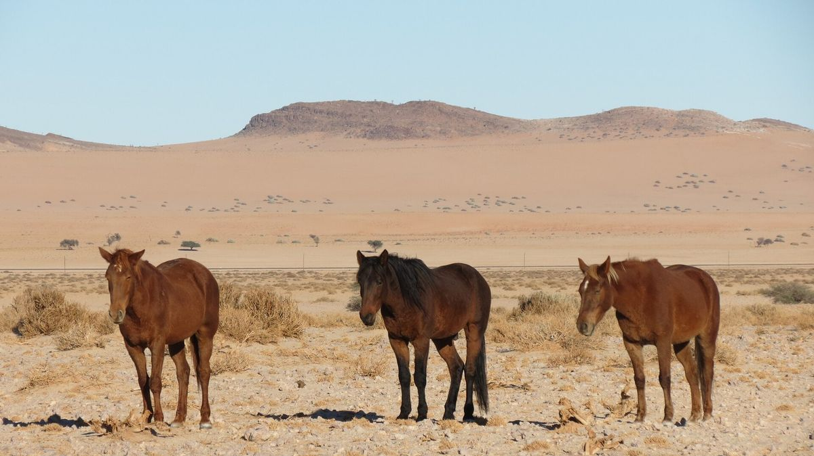
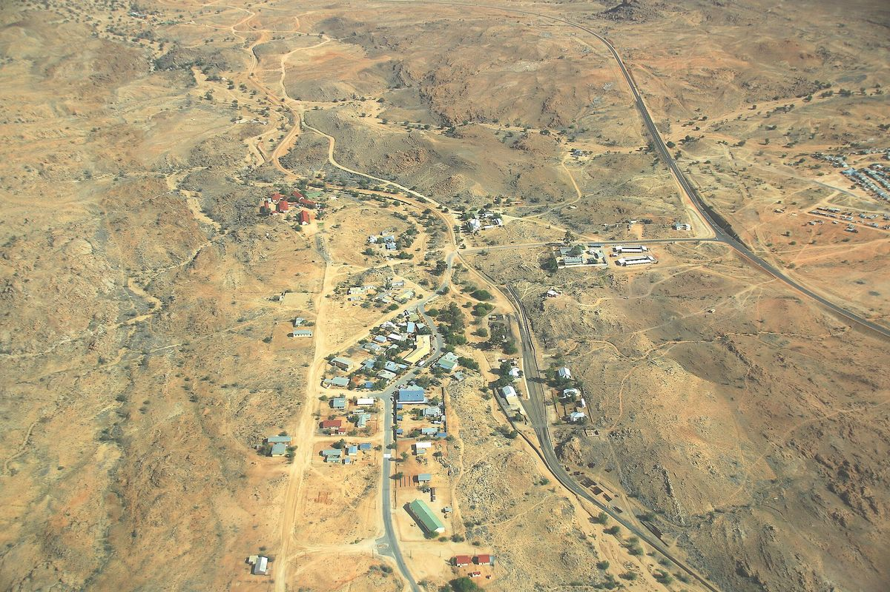
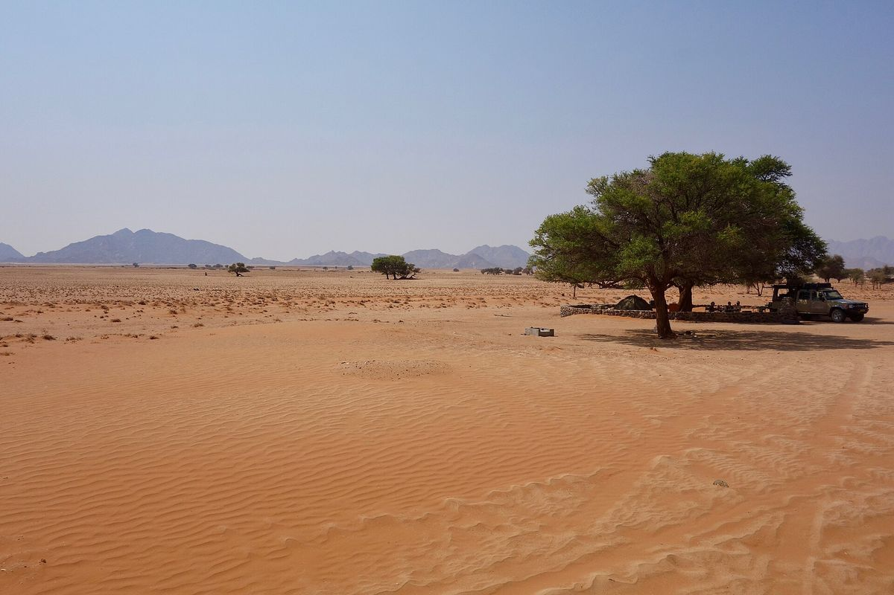
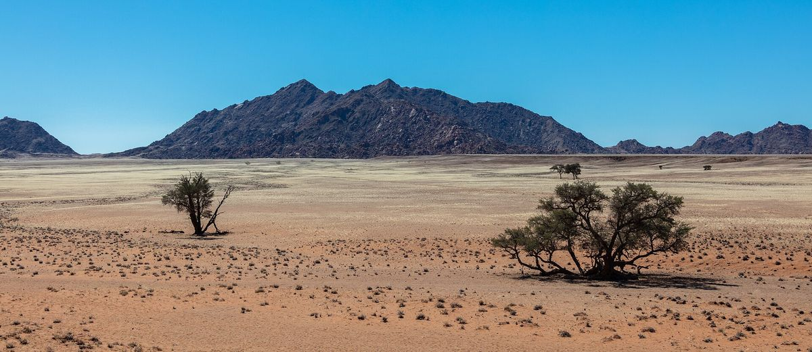
| Hora | O quê | Notas |
|---|---|---|
| 05:30 | Café e sair do apartamento | Check-out cedo, com a chave devolvida conforme combinado |
| 06:00 | Saída de Lüderitz | 125 km de asfalto até Aus; a 20 km de Aus, paragem em Garub |
| 07:10 | Garub — cavalos selvagens | A hora certa: ao amanhecer descem a beber. 15 minutos, na B4 |
| 07:35 | Aus: depósito cheio, gelo e água | Última bomba antes de 380 km de nada. Betta tem, mas não contar com ela |
| 07:55 | Campo de prisioneiros de 1915 | 1,5 km de Aus: os alemães internados depois da campanha construíram estas estradas. Muros e sepulturas da Commonwealth ao lado |
| 08:20 | C13 para norte | Gravel bom; rotação de condutor a cada 2h |
| 09:20 | Miradouro sobre o vale | 61 km de Aus, na própria estrada: 10 minutos e a vista abre-se para as Tiras |
| 10:00 | Entrada na D707 | O troço que justifica a viagem: parar quantas vezes apetecer |
| 12:15 | Almoço à sombra de um camel thorn | Levar tudo; não há sombra artificial em 200 km |
| 13:15 | Betta — combustível de reserva | 87 m da estrada; a bomba é inconstante, mas é a única entre Aus e Sesriem |
| 14:00 | C27 para norte, em direcção a Sesriem | Piso duro, corredores de areia na berma |
| 15:10 | Sesriem: check-in NWR | Bomba de combustível no camp; abastecer para as manhãs em Sossusvlei |
| 17:00 | Elim Dune | 5 km do camp, a única duna que se sobe ao fim do dia sem logística |
| 19:30 | Braai | Lua a 72%: noite clara, boa para arrumar material |
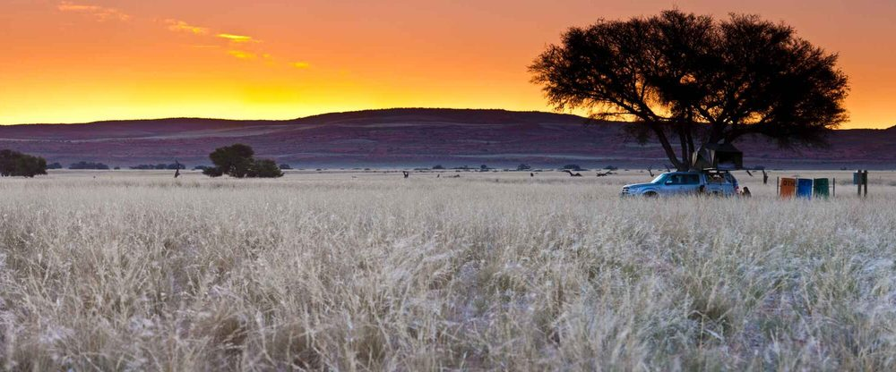
Fotografia: NWR · Sesriem Campsite(N$670/pessoa — o mais caro da viagem, e vale). Porquê: estão já dentro do portão . Ao nascer do sol seguem directos para o portão interior enquanto quem dorme fora ainda faz fila no exterior — e isso são os 45 a 60 minutos que separam Deadvlei com luz rasante ou com luz queimada.
Sossusvlei · Deadvlei · Big Daddy · Sesriem Canyon
20 dez · ⭐ DeadvleiO dia que justifica Sossusvlei: entrar com o portão a abrir, subir o Big Daddy enquanto está fresco e descer a face de areia directo a Deadvlei. Depois, ao meio-dia, o único sítio do parque onde o calor perdoa — o canyon.
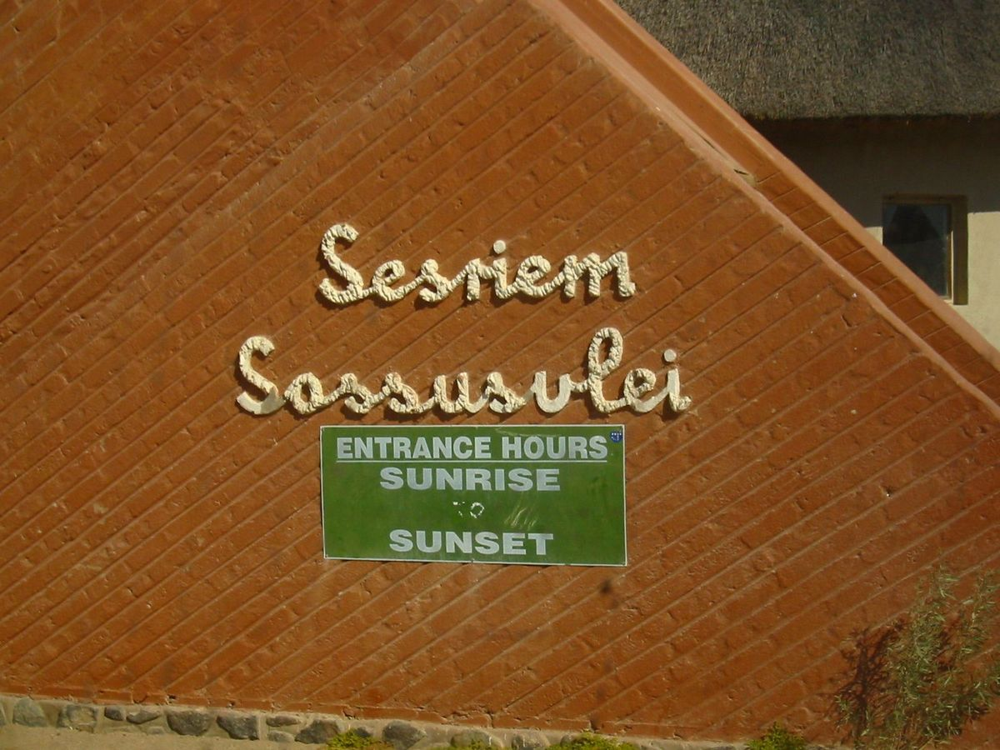
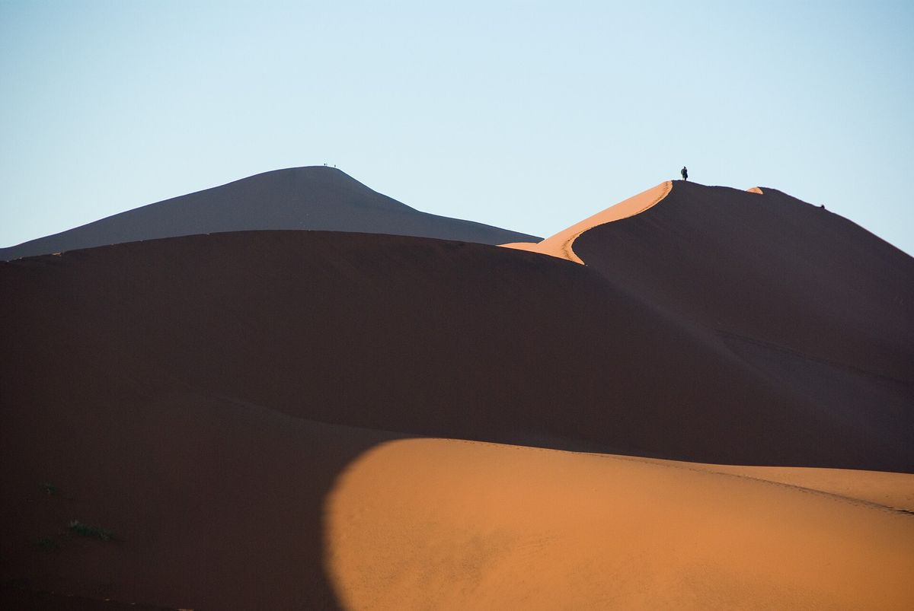
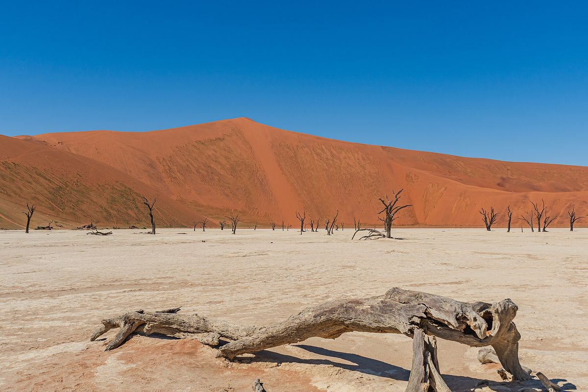
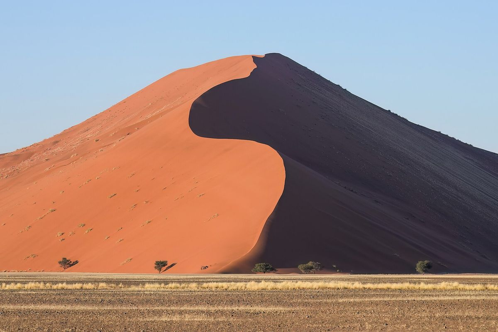
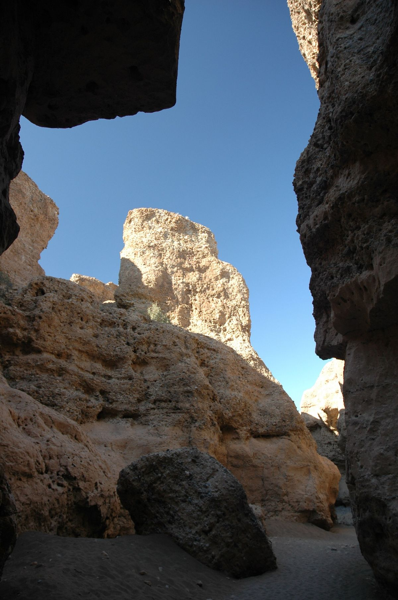
| Hora | O quê | Notas |
|---|---|---|
| 04:30 | Café, sem montar cozinha | Come-se a sério depois do vlei |
| 04:55 | Portão interior | Uma hora antes do sol , privilégio de quem dorme dentro da vedação. O portão de Sesriem só abre às 05:55 |
| 06:10 | Fim do alcatrão: 5 km de areia | Pneus a 1,5 bar. Desde maio de 2026 o 4x4 próprio faz este troço — o shuttle de N$250/pessoa deixou de ser preciso |
| 06:15 | Subida ao Big Daddy | 325 m pela crista, 45–60 min, ainda fresco. Areia mole: cada passo vale dois |
| 07:30 | Descida a correr para o Deadvlei | Vinte minutos de areia até à argila branca |
| 07:45 | Deadvlei | Acácias mortas de 900 anos, 1 km a pé desde o parque, sem sombra nenhuma. Chegaste antes dos autocarros |
| 09:30 | Saída do vlei | A luz já está dura e as multidões chegam agora |
| 10:00 | Duna 45 na volta (opcional) | Se ainda houver pernas. A subida ao nascer do sol fica para o dia 8 |
| 11:00 | Camp: piscina e sesta | Até às 16h30 não se faz nada que exija esforço |
| 16:30 | Sesriem Canyon | 30 m de paredes de conglomerado, fresco lá em baixo |
| 18:30 | Elim Dune, se a luz merecer | Senão, braai e preparar o dia de folga |
Porquê: ninguém faz Sossusvlei bem num dia só de passagem — e a segunda madrugada é o seguro contra vento, nuvens ou uma noite mal dormida.
Sesriem — o dia de folga que não é folga
21 dez · Segunda luzO dia extra, e provavelmente o melhor investimento do roteiro: segunda madrugada em Deadvlei para quem quiser, manutenção para todos. Também é o dia em que se acerta o bloco norte — combustível, comida, contas e roupa.


| Hora | O quê | Notas |
|---|---|---|
| 04:55 | Segunda madrugada: Duna 45 | Outra vez o portão interior. Sobe-se em 20 minutos e é-se 45 km de tudo |
| 05:55 | Nascer do sol no cimo da Duna 45 | A duna vermelha com a sombra a descer para o vale: o postal que o dia 7 não deu |
| 07:45 | Regresso ao camp | Pequeno-almoço a sério. Quem não subiu dormiu até tarde — e também ganhou |
| 10:00 | Manutenção do campo | Lavar roupa, arrumar o carro, backup do cartão de memória para o disco |
| 12:00 | Sesta | O Namib às 13h não é sítio para ninguém |
| 16:30 | Elim Dune a pé desde o camp | A duna mais acessível do parque, sem logística nenhuma |
| 18:00 | Contas do bloco norte | Combustível até Etosha, água, dinheiro em notas, lista de compras de Swakopmund |
| 19:30 | Braai | Última noite de deserto antes da costa |
Porquê: não desmontar campo, e ter duas madrugadas em Sossusvlei em vez de uma só tentativa.
Sesriem → Solitaire → Walvis Bay → Swakopmund
22 dez · Trópico & costaDo forno para a neve da Benguela: em cinco horas passa-se de 38 °C para 20 °C. Pelo meio, a apple pie de Solitaire, a placa do Trópico e os passos do Kuiseb. À chegada, a compra mais importante da viagem — a de Natal.
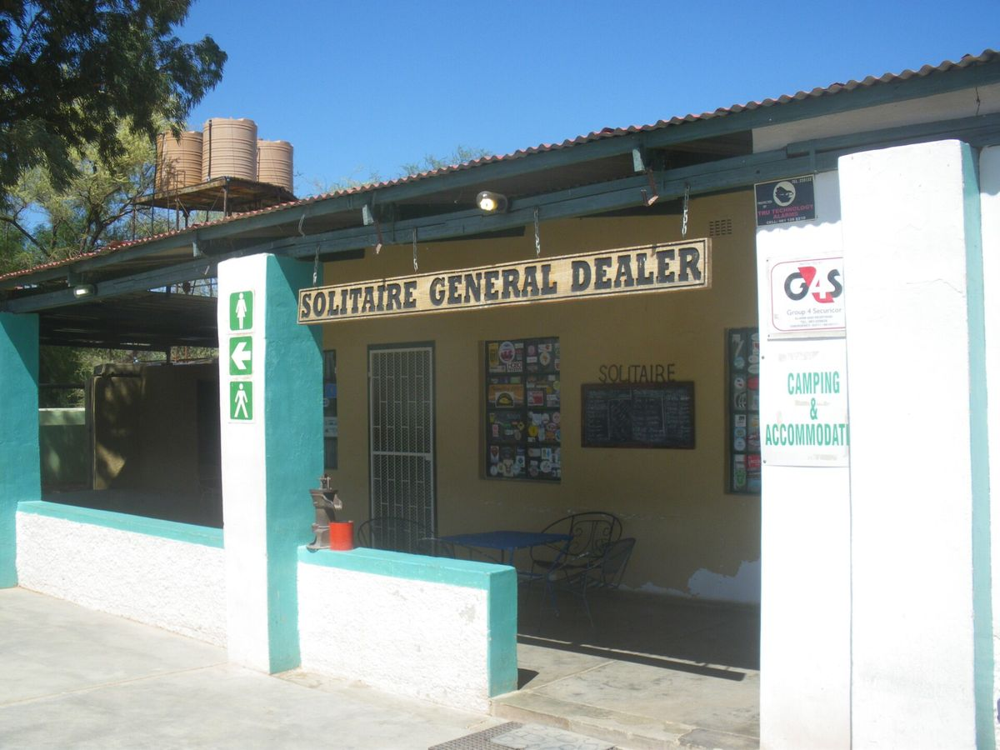
_tropic_of_capricorn.jpg)
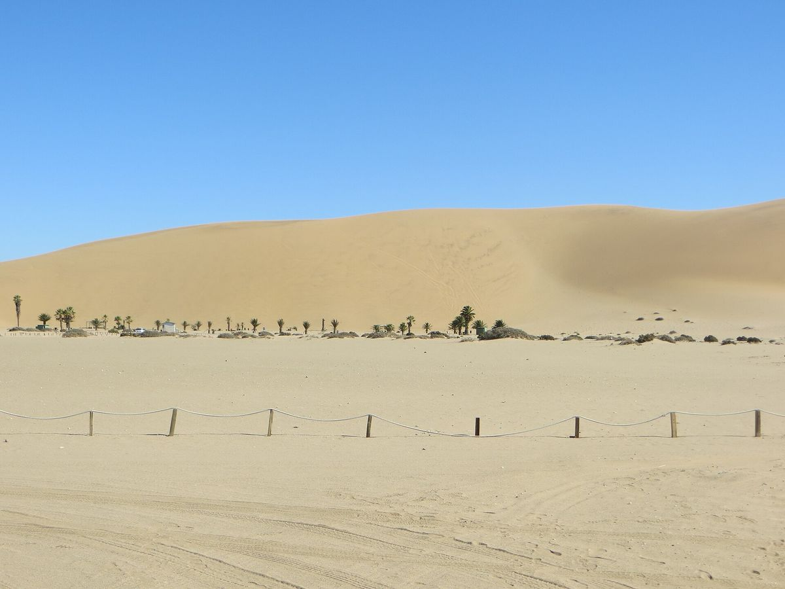
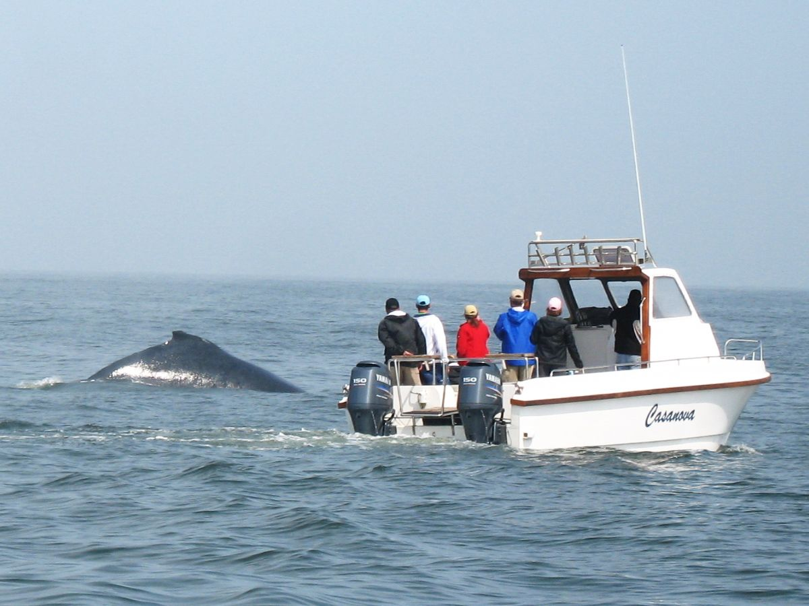
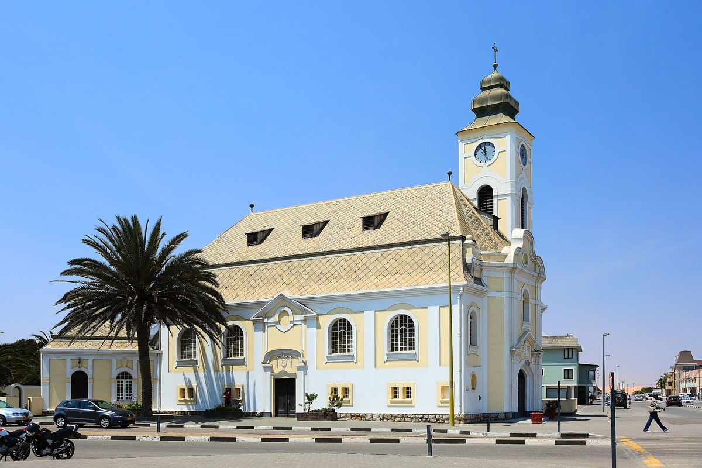
| Hora | O quê | Notas |
|---|---|---|
| 06:00 | Café e desmontar | Última manhã de deserto a sério |
| 06:30 | Saída de Sesriem | Combustível no camp antes de arrancar |
| 08:30 | Solitaire | Apple pie e café entre carcaças dos anos 50. Combustível |
| 09:30 | Placa do Trópico de Capricórnio | Selfie geodésica obrigatória |
| 10:30 | Passo do Kuiseb | Miradouro na berma: badlands lunares, 15 min bem gastos |
| 11:45 | Duna 7 | À entrada de Walvis Bay: 20 minutos a subir areia, e do cimo vê-se a baía inteira e a cidade |
| 12:30 | Lagoa de Walvis Bay | Flamingos e pelicanos; maré baixa é melhor. Grátis |
| 14:00 | Compras para 2 dias no Spar/OK Foods | Só 23 e 24: o jantar de Natal no Madisa está confirmado, por isso não é preciso comida para quatro dias de Natal. A 25 está tudo fechado |
| 15:00 | Check-in no Alternative Space | 167 Anton Lubowski Street, dois quartos. O alojamento só recebe a partir das 15:00 |
| 19:00 | Jantar no Jetty 1905 ou The Tug | Marisco sobre o mar; o reset a meio da viagem |
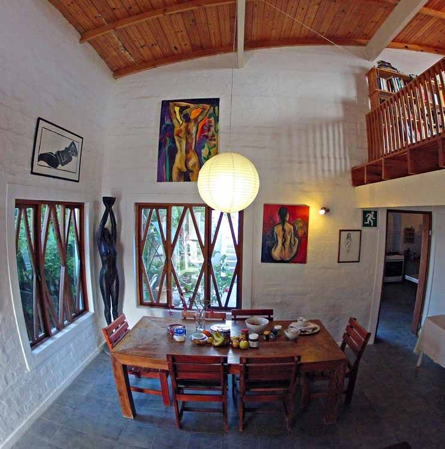
Fotografia: The Alternative SpaceDois quartos, €136 a noite, reserva 5222195431 (PIN 5815), pago a 5 nov por Revolut. Porquê: cama e pequeno-almoço antes de sair às 07:45, e estacionamento seguro no interior, sem limite de altura — confirmado por escrito pela Sibylle, as tendas de tejadilho cabem.
Swakopmund → Zeila → Cape Cross → Spitzkoppe
23 dez · Esqueletos & granitoCosta dos esqueletos em versão curta: névoa, sal, um navio encalhado e 100 mil focas com crias. Ao fim do dia corta-se para o interior e troca-se o Atlântico pelo granito — e pela véspera de lua cheia.
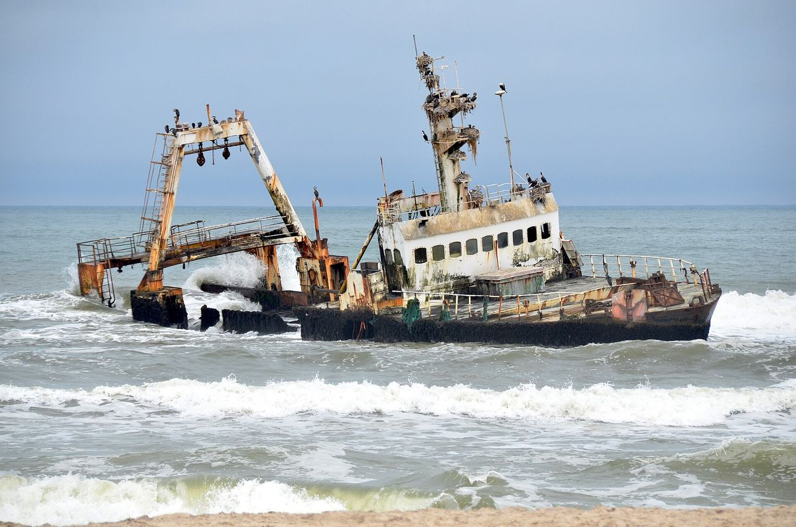
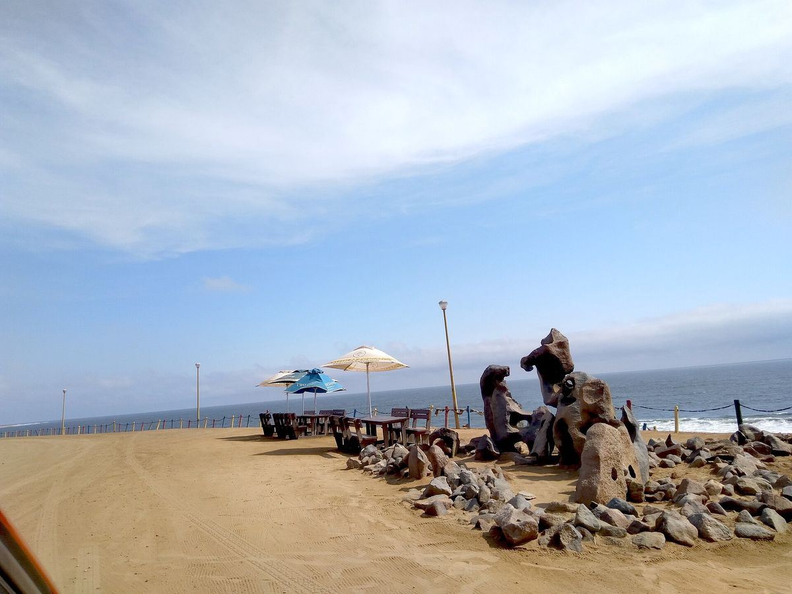
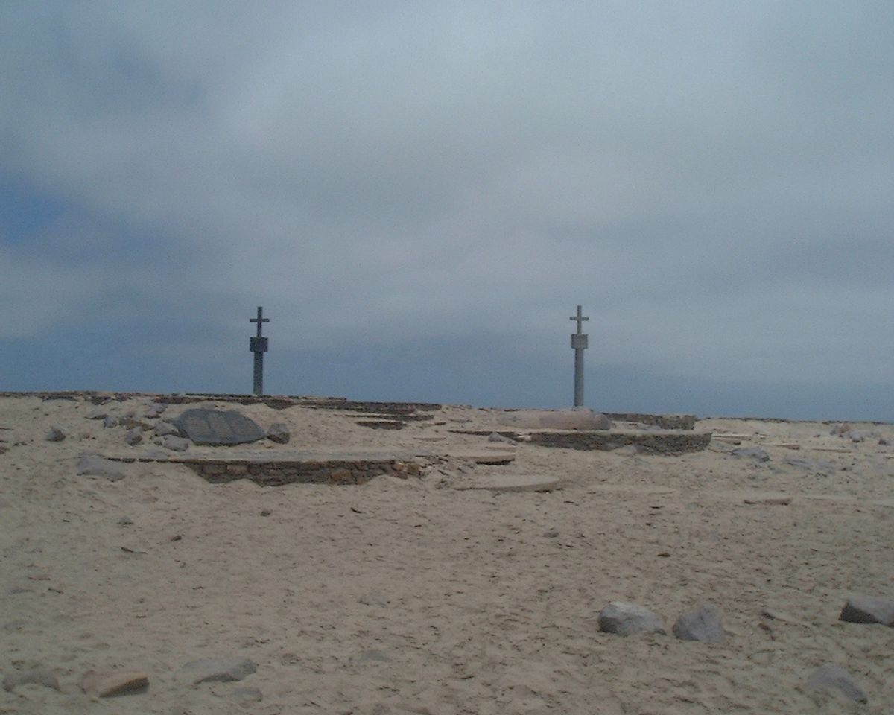
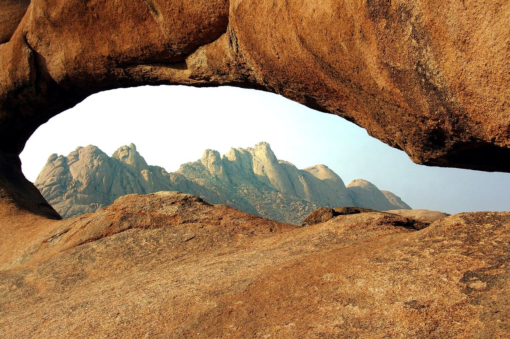

| Hora | O quê | Notas |
|---|---|---|
| 07:00 | Pequeno-almoço na cidade | Padaria alemã; encher o depósito antes de sair |
| 07:45 | C34 para norte | Estrada de sal: escorrega com a névoa da manhã |
| 08:30 | Zeila — naufrágio | 59 km de Swakopmund, não 15. Encalhado na rebentação, fotogénico no meio da névoa |
| 09:00 | Henties Bay | 18 km à frente do Zeila: combustível, gelo e café. Pouca coisa depois disto até Uis |
| 10:00 | Cape Cross | 59 km a norte de Henties. N$280 por adulto + viatura, em dinheiro. 100 000 focas, crias em dezembro, e o cheiro respectivo |
| 11:15 | Volta para sul e D1918 para leste | 169 km até ao Spitzkoppe, 2h10. Almoço numa sombra pelo caminho |
| 13:30 | Gabinete do Spitzkoppe | Taxa de dia paga aqui, em dinheiro. As parcelas não se reservam: é chegar e escolher |
| 14:00 | Instalar no spot fora da vedação | -21.80471, 15.19188 — 4 km do gabinete, areia funda na aproximação. Plano B: parcela no camp comunitário, N$190/pessoa, paga à chegada |
| 16:30 | Entrada para o arco de granito | Para lá da vedação, 20 minutos a pé. Sem guia; o trilho ao topo é que o exige |
| 17:30 | Arco ao pôr do sol | Sol a pôr-se às 19:30 no granito laranja. É a imagem do Spitzkoppe |
| 19:45 | Saída pelo portão | Antes de fechar. Dez minutos até ao spot, faróis acesos |
| 20:15 | Jantar no spot | Grelhador portátil ou o que sobrou de Swakopmund; sem água nem electricidade |
| 22:00 | Céu | Lua a 98%: noite clara, não é noite de astro profundo. O silêncio compensa |
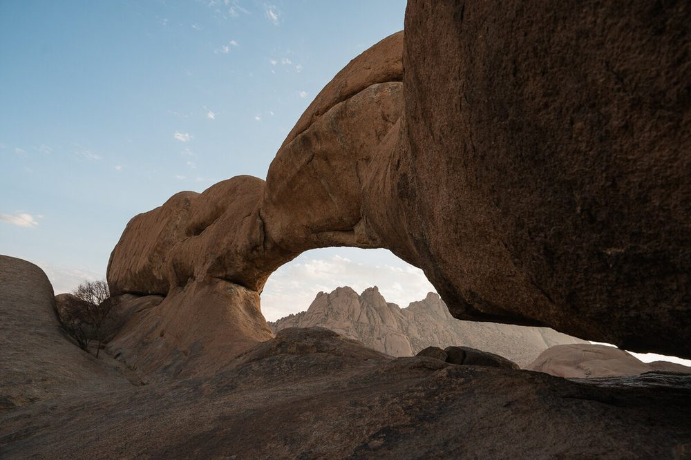
Fotografia: Spitzkoppe (arco) · spitzkoppe.com(-21.80471, 15.19188), a 530 m do limite do parque e a 1,6 km do lodge — o sítio é usado por overlanders desde 2021. Plano B sem depender de ninguém: parcela no camp comunitário , N$190/pessoa, paga no gabinete à chegada. Nenhum dos dois exige reserva.
Spitzkoppe → Twyfelfontein → Damaraland
24 dez · Pré-históriaManhã nas pinturas e nos domos, tarde nas gravuras de 6 000 anos, noite num vale de rio seco onde os elefantes também passam o Natal. É o dia sem rede — e é isso que se procura.
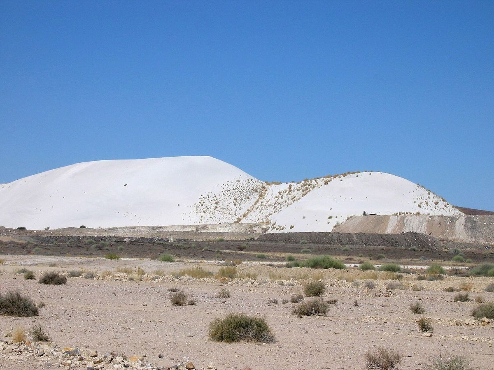
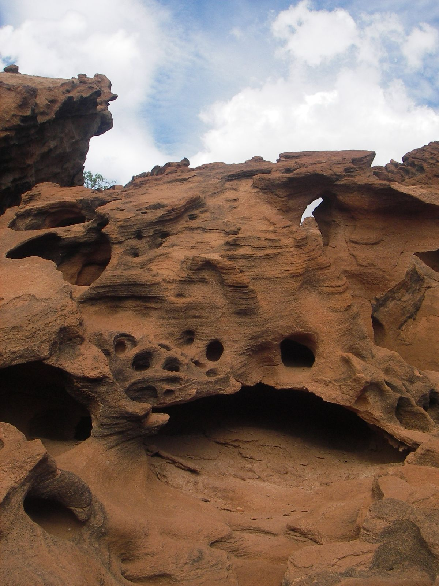
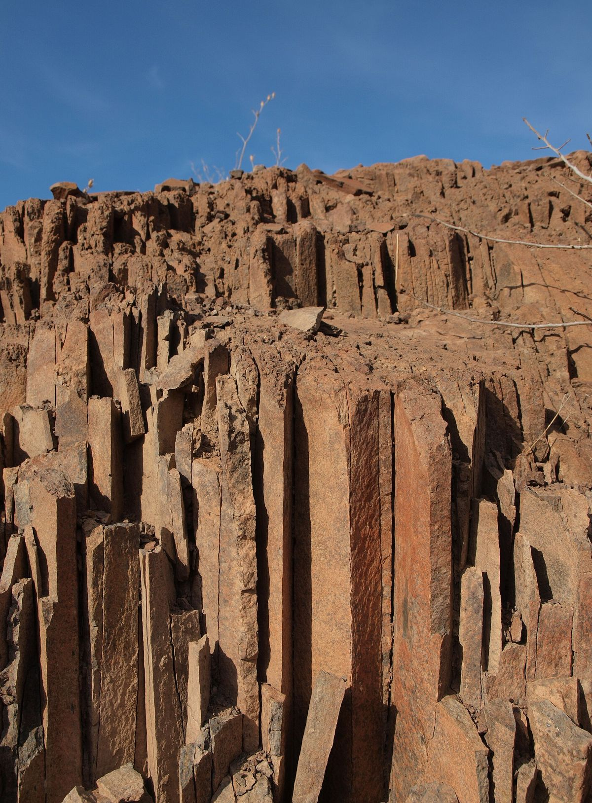
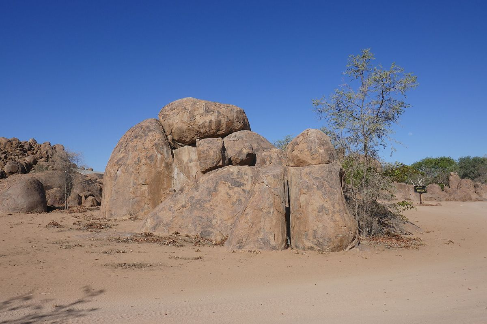
| Hora | O quê | Notas |
|---|---|---|
| 05:45 | Nascer do sol no spot | O maciço em silhueta do lado de fora da vedação, e ninguém à volta. Para as pinturas de Bushman's Paradise seria preciso reentrar e pagar a taxa de dia outra vez — não vale a uma hora destas |
| 07:30 | Pequeno-almoço e desmontar | Sem pressa, mas sem dormir: são 285 km até ao Madisa |
| 08:00 | C35/C39 para norte | Atenção aos leitos de rio: em dezembro podem levar água. 91 km até Uis, 1h10 |
| 09:30 | Uis | Combustível e vendedoras de cristais na berma — o melhor artesanato da viagem |
| 11:30 | Twyfelfontein | 131 km de Uis, 1h50 . UNESCO: mais de 2 500 gravuras, incluindo o "Lion Man". Visita guiada obrigatória, ~1h30 |
| 14:00 | Organ Pipes e Burnt Mountain | 8,6 km do Twyfelfontein; 20 min cada |
| 15:40 | Madisa Camp: campo | D2612, 18 km depois da C35. Regras de elefante: comida sempre fechada no carro |
| 17:00 | Piscina e bar | O primeiro banho de piscina desde Swakopmund |
| 19:30 | Jantar de véspera de Natal no camp | Confirmado e já na reserva , paga-se no camp. Sem Wi-Fi; água quente por donkey; electricidade só das 18h às 22h |
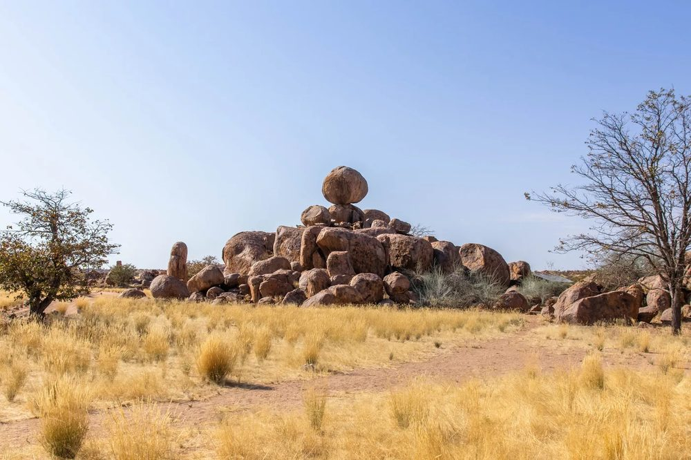
Fotografia: Madisa CampOverland Site, N$865,20 pagos a 6 nov (reserva 20749), jantar de Natal confirmado e a pagar no camp. Porquê: piscina, bar e jantar servido na véspera, com braai como alternativa; e fica virado a sul, o que encurta a etapa para o Etosha.
Damaraland → Anderson Gate → Okaukuejo
25 dez · ⭐ Etosha, lado oesteDia de Natal na estrada, com as lojas fechadas e as estradas vazias — a melhor troca possível. Entrada em Etosha ao início da tarde e primeiro game drive. A noite é o espectáculo: o waterhole iluminado de Okaukuejo.
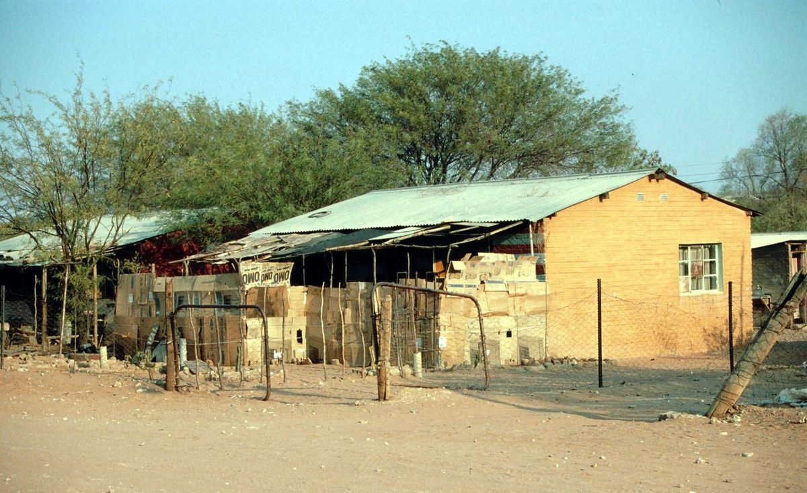
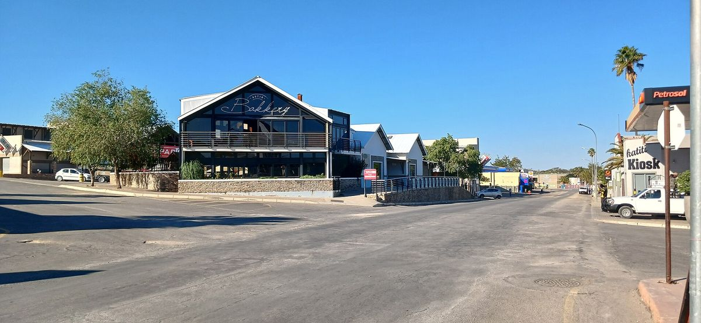
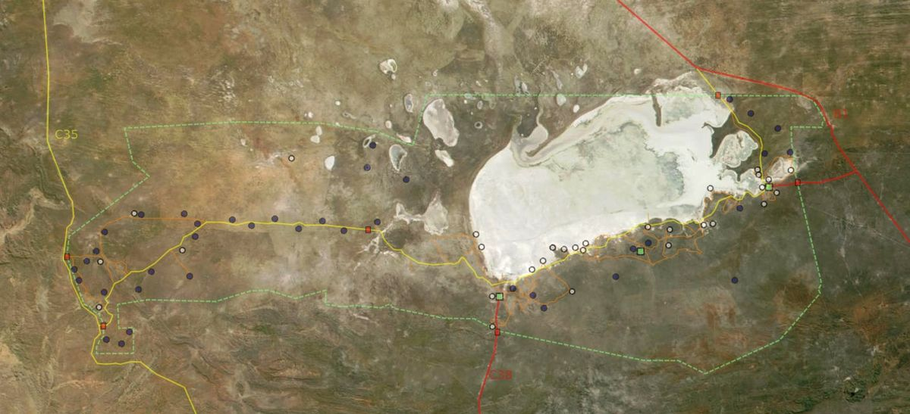
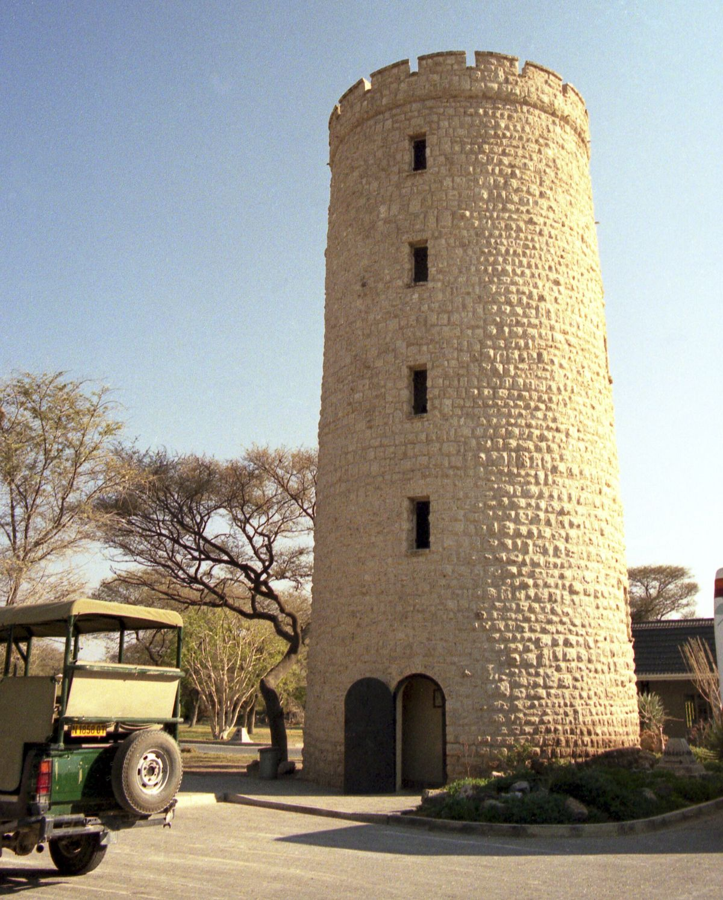
| Hora | O quê | Notas |
|---|---|---|
| 06:15 | Saída do Madisa | Tudo fechado em Damaraland; levar pequeno-almoço do camp |
| 07:15 | Khorixas | 65 km do Madisa. Combustível; as lojas estão fechadas a 25 de dezembro |
| 09:15 | Outjo | 126 km de Khorixas. Último combustível antes do parque: encher sem discussão |
| 11:15 | Anderson Gate | Taxas em dinheiro. Perguntar quais os waterholes activos — em época verde é a informação mais valiosa do dia |
| 12:30 | Okaukuejo: check-in | Piscina e sombra: das 11h às 15h30 a pan é um espelho vazio |
| 16:30 | Game drive | Nebrownii e Okondeka; crias de zebra e springbok por todo o lado |
| 19:34 | Portão fecha | Dentro do camp, sem excepções |
| 21:00 | Waterhole iluminado | Rinoceronte-negro entre as 21h e a 01h. Com três pessoas, façam turnos |
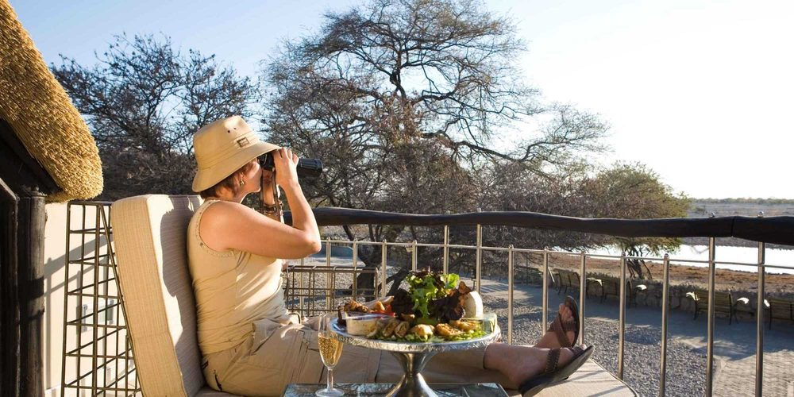
Fotografia: NWR · Okaukuejo Camp(N$460/pessoa). Porquê: o waterhole nocturno é a razão de existir deste dia; dormir fora do parque mata-o.
Okaukuejo → Halali
26 dez · Travessia da panMadrugada no waterhole — a primeira luz é quando os felinos ainda estão fora — e depois a travessia clássica para leste, ao ritmo dos waterholes que o guarda indicou. À noite, um segundo espectáculo diferente do primeiro.
_19990804_JoRoRe.jpg)
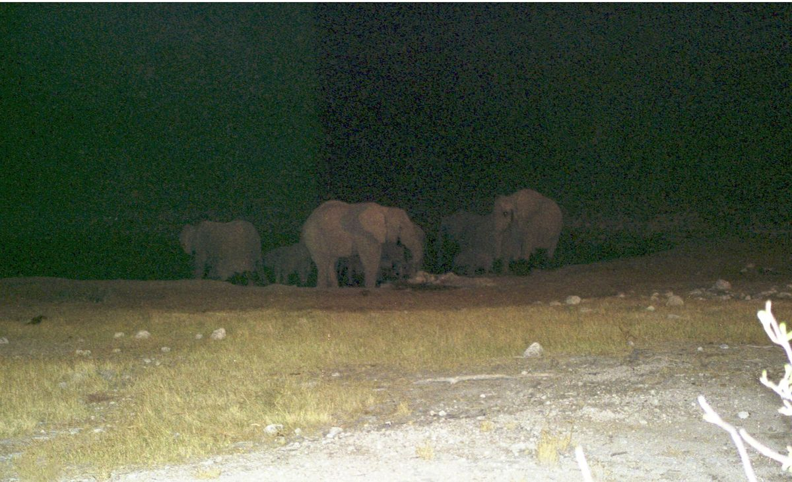

| Hora | O quê | Notas |
|---|---|---|
| 05:45 | Café e portão | Abre às 06:17. Os primeiros 40 min de luz valem o dia inteiro |
| 06:20 | Game drive matinal até Pan's Edge | 20 km a nordeste: o miradouro sobre a pan, com a luz ainda baixa e o espelho de sal a branquear. Volta por Ombika e Nebrownii |
| 09:00 | Pequeno-almoço no camp | A sério, com cozinha montada |
| 10:30 | Estrada para Halali | 130 km de gravel de parque, 60 km/h máximo |
| 13:00 | Halali: check-in | Camp no centro do parque; piscina e sesta |
| 16:00 | Waterholes do centro | Moringa e Rietfontein ao fim da tarde |
| 19:34 | Fecho do portão | De volta ao camp; braai com o que sobrou do Natal |
| 21:00 | Waterhole de Moringa | Mais íntimo que Okaukuejo; o melhor do parque para leopardo e rinoceronte-negro à noite |
(N$460/pessoa). Porquê: o único camp no centro do parque; poupa 100 km de repetição e dá um segundo waterhole nocturno, diferente do primeiro.
Halali → Namutoni → Von Lindequist → Waterberg
27 dez · Namutoni & o planaltoÚltima manhã de fauna, almoço num forte alemão e a subida ao Waterberg — uma montanha-ilha de arenito vermelho, verde e visivelmente mais fresca do que tudo o que ficou para trás.
| Hora | O quê | Notas |
|---|---|---|
| 05:45 | Saída de Halali | Chudop e Klein Namutoni ao nascer do sol |
| 09:00 | Forte de Namutoni | Brunch no forte; última oportunidade de água potável fácil no parque |
| 10:30 | Portão Von Lindequist | Saída do parque; cordão veterinário — nada de carne crua para sul |
| 11:30 | Tsumeb | Primeira bomba depois do parque: 100 km do portão. Encher e comprar gelo |
| 13:15 | Otjiwarongo | 180 km de Tsumeb. Almoço de estrada e troca de condutor |
| 14:45 | Waterberg: check-in NWR | Campo na base do planalto, o único alojamento do parque |
| 17:30 | Miradouro do planalto | Luz do fim da tarde sobre o bush; rinocerontes avistados à distância |
| 19:30 | Braai e arrumar | Preparar a subida de amanhã: sapatos, água, 06:00 |
N$1 290 a noite para os três, reservado . Na base do planalto e o único alojamento do parque.
Waterberg → Windhoek → voo
28 dez · Planalto & regressoA única caminhada da viagem em território de fauna grande, feita ao fresco da madrugada. Depois 280 km de asfalto, devolução do carro e um voo às 20:00 — com margem para um furo.
| Hora | O quê | Notas |
|---|---|---|
| 05:45 | Subida ao miradouro atrás do camp | Caminho íngreme de 45 minutos, sem guia, com o bush a abrir-se até ao horizonte. Não é o topo do planalto |
| 07:30 | Descida e pequeno-almoço | Desmontar o campo com calma |
| 09:30 | Saída do Waterberg | Limite absoluto: 13:00. São 280 km de asfalto, ~3h |
| 12:30 | Windhoek | Depósito cheio e lavagem rápida, se der |
| 15:30 | Devolução na Asco | Hora do contrato: inspecção, garrafa de gás e depósito cheio. Meia hora até ao shuttle |
| 16:00 | Shuttle da Asco para Hosea Kutako | É o último do dia , confirmado por email. 45 min até ao aeroporto |
| 17:00 | Check-in do voo 4Y133 | Compras de última hora, jantar no terminal |
| 20:00 | Voo para Frankfurt | Chegada a FRA às 05:20 de dia 29; autocarro para o Hahn às 17:20 |
Porquê o Waterberg como última noite: a 280 km de Windhoek em asfalto, dá margem real para um furo ou um atraso sem pôr o voo em risco.
Créditos das fotografias
As fotografias dos locais vêm do Wikimedia Commons, sob as licenças indicadas. Os nomes dos ficheiros ligam à página original, onde estão a licença completa e o histórico. Onde a fotografia é da região e não do alojamento, a legenda di-lo — nenhuma imagem foi apresentada como sendo de um sítio que não é.
- Hosea Kutako International Airport.jpg — PetterLundkvist at English Wikipedia, CC BY-SA 2.5
- M36(c14) tropic of capricorn.jpg — Hans Hillewaert, CC BY-SA 4.0
- Kirche Keetmanshoop.jpg — de:Benutzer:Robert.raderschatt, Copyrighted free use
- Mesosaurus Fossil Camp (2017).jpg — Olga Ernst & Hp.Baumeler, CC BY-SA 4.0
- Quiver Tree Forest, Keetmanshoop (3166047773).jpg — Joachim Huber from Switzerland, CC BY-SA 2.0
- Giants Playground, Keetmanshoop (3174991044).jpg — Joachim Huber from Switzerland, CC BY-SA 2.0
- Fish River Canyon Namibia.jpg — Thomas Schoch, CC BY-SA 3.0
- 020528092Namibia.JPG — Graf-flugplatz, CC BY-SA 3.0
- Canyon Roadhouse (2018).jpg — Hp.Baumeler, CC BY-SA 4.0
- Aus Namibia (2018).jpg — Hp.Baumeler, CC BY-SA 4.0
- Berg Street (18636357723).jpg — David Stanley from Nanaimo, Canada, CC BY 2.0
- 12-2-Diazpoint 02.jpg — UBMES, CC BY-SA 4.0
- 01Kolmannskuppe.jpg — Uploaded on April 24, 2006 by SqueakyMarmot, CC BY 2.0
- Krabbenhöft & Lampe Building in Lüderitz, Namibia.jpg — Damien du Toit from Cape Town, South Africa, CC BY 2.0
- Luderitz, Diaz-Point, Grosse Bucht.jpg — Peter Stenglein, CC BY-SA 2.5
- Shark Island 01.jpg — Johan Jönsson (Julle), CC BY-SA 4.0
- Wild Horses of Garub.jpg — Leomudde, CC BY-SA 4.0
- Aus Namibia (2018).jpg — Hp.Baumeler, CC BY-SA 4.0
- Sesriem Campsite (37740869241).jpg — Sonse, CC BY 2.0
- Duna Elim, Sossusvlei, Namibia, 2018-08-06, DD 163.jpg — Diego Delso, CC BY-SA 4.0
- Sesriem, Namibia - panoramio.jpg — mroszewski, CC BY-SA 3.0
- BigDaddyDune.jpg — Eric Bézine, CC BY-SA 3.0
- Namib Desert, Deadvlei, Sossusvlei.jpg — https://www.flickr.com/people/150102727@N06/, CC BY 4.0
- 006 Dune 45 in Sossusvlei at sunrise Photo by Giles Laurent.jpg — Giles Laurent, CC BY-SA 4.0
- Namibie Sesriem Canyon 01.JPG — No machine-readable author provided. Calips assumed (based on copyright claims)., CC BY 2.5
- Solitaire, Namibia03.jpg — Vberger, Public domain
- M36(c14) tropic of capricorn.jpg — Hans Hillewaert, CC BY-SA 4.0
- Dune 7 (July 2018) 01.jpg — Visem, CC BY-SA 4.0
- NA-walvis-2.jpg — Bgabel, CC BY-SA 3.0
- Swakopmund ev-luth Kirche 1.jpg — Alchemist-hp (talk) (www.pse-mendelejew.de), FAL
- Schiffswrack Zeila, Namibia 2014.jpg — Olga Ernst, CC BY-SA 4.0
- Henties Bay Beach.jpg — Louise Kapp, CC BY-SA 4.0
- Two stone crosses on Cape Cross.jpg — Bupa66, CC BY-SA 2.0 de
- 21 07 Spitzkoppe.jpg — Lowcarb23, CC BY-SA 4.0
- 21 07 Spitzkoppe.jpg — Lowcarb23, CC BY-SA 4.0
- Abraumhalden Uis.JPG — Harald Süpfle, CC BY-SA 2.5
- Twyfelfontein 20.jpg — Mike from Vancouver, Canada, CC BY 2.0
- NA Twy Orhan pipes.JPG — :ru:User:(WT-ru) Digr, CC BY-SA 3.0
- Kalkbron-Madisa Camp (3).jpg — Ji-Elle, CC BY-SA 4.0
- Khorixas housing.jpg — Thomas Schoch, CC BY-SA 3.0
- Outjo Bakery.jpg — Candice in Nam, CC0
- EtoshaBorders.jpg — Modified by Harald Süpfle, Public domain
- Okaukuejo Camp 19990804 JoRoRe.jpg — Joaquín Romero Redondo, CC BY-SA 4.0
- Moringa Pan (Halali Camp, Etosha) 19990804 JoRoRe.jpg — Joaquín Romero Redondo, CC BY-SA 4.0
- Moringa Pan (Halali Camp, Etosha) 19990804 JoRoRe.jpg — Joaquín Romero Redondo, CC BY-SA 4.0
- Namutoni Panorama.jpg — Jedesto, CC BY-SA 4.0
- Feierabend in der Kupfermine Tsumeb.jpg — Deutsche Kolonialgesellschaft (DKG), Public domain
- Otjiwarongo 2013 002.JPG — indeedous, Attribution
- Waterberg, Namibia Luftaufnahme von Osten.jpg — jthetzel, CC BY 2.0
- Windhoek - panoramio.jpg — mroszewski, CC BY-SA 3.0
As fotografias dos alojamentos vêm das páginas dos próprios estabelecimentos (NWR, Quivertree Forest, Shalom, The Alternative Space, Madisa, Spitzkoppe) e são usadas aqui com autorização dos mesmos, no âmbito deste roteiro privado. Não estão sob licença livre e não devem ser reutilizadas fora desta página.